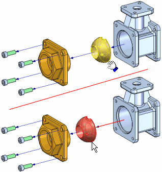
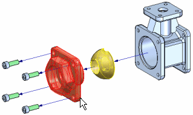
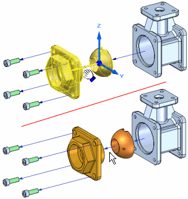
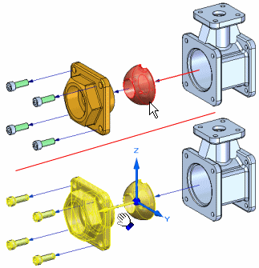
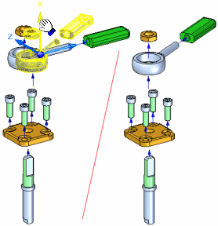
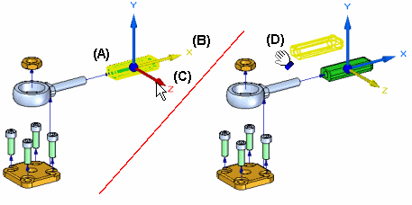
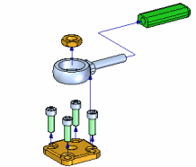

Drag Component command
Moves or rotates parts in an exploded view in an assembly. You can use this command to do the following:
-
Move one or more parts along the original explode vector or a new vector you define.
-
Rotate one or more parts along the original explode vector or a new vector you define.
-
Move one or more parts within a plane you define.
You can move or rotate a single part, a set of parts, or a part and all its dependent parts. The same basic steps apply whether you are moving, rotating, or moving within a plane.
Moving parts along the original explode vector
-
To move a single part: select the part, then drag it to the new location.

-
To move a set of parts: select the parts, then click the Accept (check mark) button on the command bar.

When you click the Accept button, an orientation triad is displayed, with the X-axis oriented to the explode vector. By default, the original explode vector axis is selected. Drag the cursor to move the set of parts to the new location.

-
To move a part and all its dependent parts: set the Move Dependent Parts option on the command bar, then select the part you want to move. The part and all its dependent parts highlight. When you click the Accept button, an orientation triad is displayed. By default, the original explode vector axis is selected. Drag the cursor to move the set of parts to the new location.

Moving parts along a different explode vector
To move one or more parts along a different explode vector, first define the select set of parts. For example, you can use the command bar to specify that you want to move a part and all its dependent parts. After you click the Accept button, position the cursor over the triad axis you want to move along, then drag the cursor. A joggle is added to the flow line automatically. When you offset the part in a new direction, a new explode event is added to the Explode PathFinder tab.

When parts have been moved outside of their original explode vector, you can also move them back into their original explode vector. Select the parts you want to move, select the proper axis, then drag the parts back to the original explode vector. When you get close to the original explode vector, the parts will automatically lock into the original vector. The joggle segment will be automatically removed.
Rotating parts
To rotate one more parts, first set the Rotate option on the command bar. Define the select set of parts, then position the cursor over the axis you want to rotate about, and then drag the cursor to the new location.

Moving parts within a plane
To move one or more parts within a plane, first set the Move Planar option on the command bar. Define the parts you want to move (A), then define the plane you want to move the parts within. The movement plane is defined by the X axis (B) and another axis you select. For example, you can move a part within the plane defined by the X axis and Z axis (C). Then drag the cursor to the new location (D).

With the Move Planar option, parts are typically moved outside of the original explode vector axis. If so, a joggle is added to the flow line.

For additional information on working with exploded views, see the Creating Exploded Views of Assemblies and Explode PathFinder tab Help topics.
How do I
Explode an assembly automaticallyExplode individual parts in an assembly
Reposition a Part in an Exploded Assembly
Remove a part from an exploded assembly
Collapse a part in an exploded assembly
Drag an exploded part in an assembly
Unexplode an Assembly
Keep a subassembly intact when exploding
Unbind a subassembly
Drop flow lines
Display or Hide Flow Lines in an Exploded Assembly
Add Events to or Remove Events from an Event Group
Learn more
Creating exploded views of assembliesLook up more details
Auto-Explode commandAutomatic Explode command bar
Automatic Explode Options dialog box
Explode command
Explode command bar
Manual Explode Options dialog box
Explode PathFinder tab
Explosion Properties dialog box
Reposition command
Reposition command bar
Remove command (Explode application)
Collapse command
Drag Component command bar
Unexplode command
Bind Subassembly command
Unbind Subassembly command
Draw command (flow lines)
Draw command bar
Modify command
Modify command bar
Flow Lines command
Flow Line Terminators command
Show Flow Lines Command
Hide Flow Lines Command
Remove Event from Group Command
Add Event to Group Command
Display Configuration Options dialog box